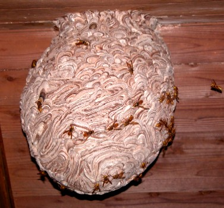
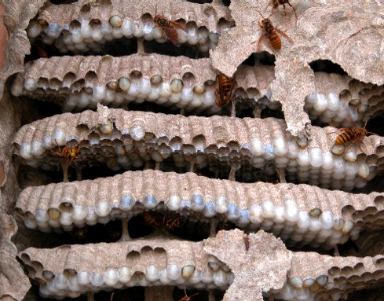
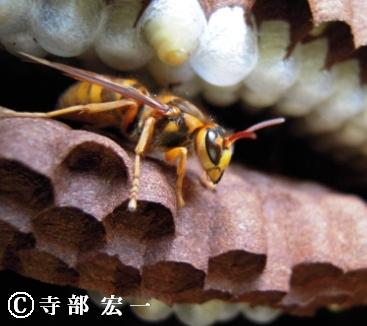
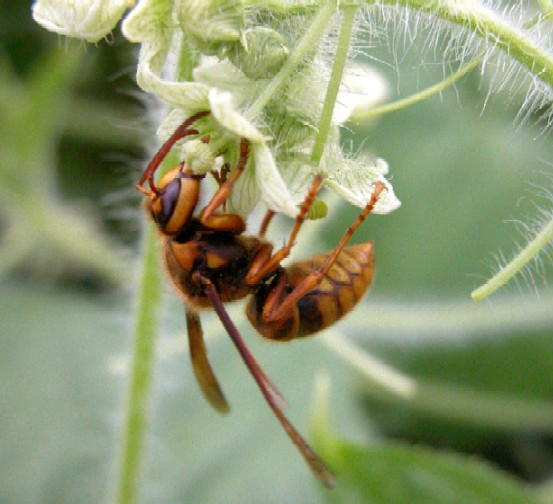

キイロスズメバチ
（Vespa simillima xanthoptera Cameron）
・蜂の大きさは小さくて黄色。飛んでいる姿は赤っぽく見える。
・巣は始めは屋根裏、壁の中など閉鎖空間に作られる。その後引越しを行い、開けた家の軒下などに大きな巣を作ることが多い。
・働き蜂の数は非常に多くなり、攻撃性も高いので刺される被害が絶えない。
キイロスズメバチは、見えるところに巣を作るスズメバチのなかでは、一番大きな巣を作ります。よく屋根の下などに大きな巣がぶら下がっているのを見かけるかもしれませんが、あれがキイロスズメバチです。
名前の通り、スズメバチ自身が黄色っぽく、飛んでいるとオレンジ色にも見えたりします。そのため、地方によってはこのことから「アカバチ」とも呼ばれます。 以前住んでいた会津では、ぶら下がっている状態が、「瓶」に似ている事から「カメバチ」とも呼ばれています。
キイロスズメバチは気性が荒く、巣に近づくだけでも、スズメバチがワラワラ巣から出てきてしまいます。よく民家にできることが多いので、気をつけたい蜂でもあります。
キイロスズメバチの大きさは、女王蜂で25～28ｍｍ、働き蜂は17～24ｍｍ、雄蜂で20～24ｍｍとなります。
生息地域は幅広く、日本の南の沖縄から北は北海道まで分布し、さらに、最近ではその食性が雑食なことから都会でもよく営巣が見られるようになりました。
キイロスズメバチは引越しすることが多いです。
始め女王蜂が狭い閉鎖空間などに巣を作り、まずは働き蜂を増やします。この後その場所が手狭になると、増えた働き蜂の協力の下、屋根の軒下など解放空間へ移動し、早い速度で巣を再構築するのです。
初夏には巣が無くとも、ある時突然キイロスズメバチの巣が出現したりするのはこのためです。このスズメバチの引越しには充分ご注意ください。
ズメバチの引越しにご注意ください！
キイロスズメバチの女王蜂は4月から6月に巣作りを開始し、6月頃には働き蜂が羽化してきます。その後、9月～10月にはその規模がピークを迎えます。そして、9月～11月には雄蜂や新女王蜂が羽化してきます。
働き蜂の数がスズメバチの赤で一番多く、巣の拡大スピードもとても早く、その後の活動時期も長くまで続きます。
その後交尾を終えた新女王蜂は、朽木や土なのかで来年の春まで越冬をします。

軒下に出来た大きなキイロスズメバチの巣
壁の中のキイロスズメバチの巣
キイロスズメバチの働き蜂キイロスズメバチ
キイロスズメバチは、日本のスズメバチの中で一番大きな巣を作ります。
一見、オオスズメバチが大きな巣を作りそうですが、オオスズメバチは土の中に巣を作る分、そこまで大きな巣は作れないのかと考えられます。
働き蜂の数は、多い時で1000匹を超え、新女王蜂や雄蜂ですら数百匹も羽化してくる事もあります。とにかく巣の大きさ・蜂の数では、他のスズメバチに比べてダントツ１位のハチです。
キイロスズメバチのご馳走メニューはなんでもありです。とにかくいろいろな昆虫を餌として捕まえ、巣に持ち帰ります。その例をあげてみますと、ハエ、アブ、セミ、トンボ、さらにミツバチ、アシナガバチも食べます。
キイロスズメバチも他のスズメバチ同様、木の樹液や花の蜜を食べにやってきます。
特にオオスズメバチのように、集団攻撃（マスアタック）を仕掛ける事はないのですが、単体のハチで狩りを行い、いろいろ捕まえます。
キイロスズメバチは全国的に、現在広範囲で生息が確認されています。
その適応能力のすごいこと、都会まで進出し、ジュースの飲み残しや落ちているお菓子なんかもちゃっかり食べてます。そんなわけで、キイロスズメバチの被害は多くの地域で、長い期間発生しています。
キイロスズメバチはかなり攻撃性は高く、家の屋根の軒下に巣を作った場合、巣の下で何か作業をしたり、通ったただけでも刺されてしまう事があります。
とにかくいろいろな地域で、様々な場所で巣が見られることから、屋外、民家での被害が後を絶ちません。会津でも刺される被害が一番多いのがこのキイロスズメバチです。
どうぞ気をつけてください。
スズメバチ属(vespa)

花の蜜をなめるキイロスズメバチの働き蜂（仙台市・大友純平撮影）-
生け捕り捕獲など

-
種類や生活史・巣の場所等

-
被害者や対策・対応等

-
すずめばちやについて